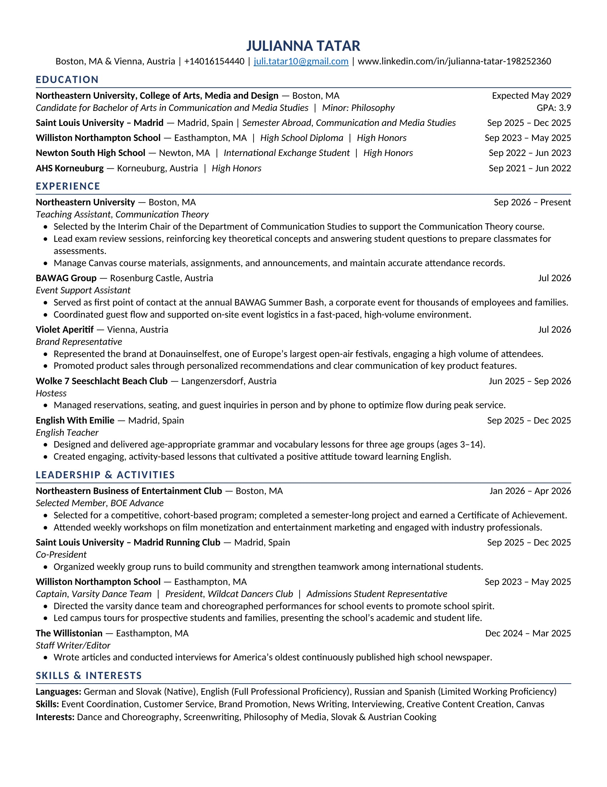

about me
Born in Slovakia and raised in Vienna, Austria, I grew up between languages and cultures, often speaking one at home and another everywhere else. In my sophomore year of high school, I came to the United States as an exchange student, attending Newton South High School and living with a host family. What was supposed to be one year turned into something bigger. I thrived academically and saw opportunities in the American education system that I wanted to keep pursuing, so I decided to stay. To continue my studies as an international student, I transferred to the Williston Northampton School, a boarding school in Western Massachusetts, where I finished high school.
English is my fourth language, after Slovak, German and Russian. Learning to write, and eventually think, in it wasn’t an easy process, but it taught me persistence and how to find my place in unfamiliar environments. Today I speak English, German and Slovak fluently and understand Russian and Spanish, and each language has shaped how I see people and the world a little differently.
I’m currently studying Communication and Media Studies at Northeastern University, with a minor in Philosophy. With so much of what we see today shaped by social media and AI, I think it’s more important than ever to question what we consume and how it’s presented. Philosophy helps me do that, and it connects closely to my interests in media and screenwriting, where the stories we tell influence how people see the world and each other.
CITI Program: Social & Behavioral Research
Human Subjects Research, Basic Course
Northeastern University, completed October 2026
Résumé

follow me
Five places that shaped how I see, listen and write. Select a place to open its chapter.
words I’m proud of
Recent writing
ABOUT THIS PIECE
An analysis of nine drug sequences from season 1 of HBO’s Euphoria, looking at how cinematography and mise-en-scène place the viewer inside Rue’s experience. Drawing on Merleau-Ponty’s pre-reflective experience and Heidegger’s einräumen through Akoury (2020), I argue that the show’s surreal lighting, close-ups, slow motion and long takes open up space for empathy rather than judgment.
“The show does not prescribe a way of thinking; instead, it creates conditions that allow viewers to reconsider pre-existing ideological frameworks.”
READ THE PAPER (PDF)ABOUT THIS PIECE
Heartbroken after a breakup, Leo signs up for an experimental procedure that erases memories, working backwards from the most recent. Forced to watch his relationship with Maya unravel in reverse, he realizes too late what he is losing. A short drama about memory, regret and whether some things should ever be forgotten.
“Some memories don’t heal with time, they just stay open forever.”
READ THE SCREENPLAY (PDF)ABOUT THIS PIECE
A rhetorical analysis of Harper’s 1866 speech at the Eleventh National Women’s Rights Convention. Using Dana Cloud’s concept of the Null Persona, alongside archival coverage from The Liberator, I show how Harper used metaphor, biblical allusion and carefully framed questions to address injustices she could not safely name outright.
“Rather than naming these injustices as accusations against her predominantly white audience, Harper used methods such as metaphors and biblical allusions.”
READ THE PAPER (PDF)ABOUT THIS PIECE
A close reading of eleven settings in the music video for The Man, from the skyscraper office to the painted-sky wedding. Using Bordwell and Thompson’s definition of setting, I trace how every space is deliberately built to look staged, turning artificiality itself into the video’s message.
“In Taylor Swift’s music video, there is a consistent and deliberate construction of artificiality across each setting.”
READ THE ANALYSIS (PDF)ABOUT THIS PIECE
A segmentation of the Sunken Place scene from Jordan Peele’s Get Out. I follow the repeated close-up of the teacup as the cue that moves the narration from objective to fully subjective depth, pulling the viewer step by step into the protagonist’s loss of control.
“Each time the teacup appears on camera, it functions as a visual cue, triggering a slow zoom toward the protagonist’s face.”
READ THE ANALYSIS (PDF)Published in The Willistonian
STAFF WRITER AND EDITOR, 2024–2025
say hello
JULIANNA TATAR, BOSTON AND VIENNA
ahoj
/ˈaɦoj/ interjection, Slovak, informal
Chapter one
WHERE I WAS BORN
When asked where I was born, I am always eager to talk about Martin, as it allows me to remind myself where my roots truly lie. A small city in the heart of Slovakia, surrounded by mountains that protect it like a blanket, filled with the smell of nature and the silence of the night, where even the darkness never feels scary. It is the place I will always call my forever home.
Although not known by many, I always recommend this place, not only because it is where I spent my childhood and therefore hold so close to my heart, but also because, whenever I return, I feel a sense of freedom that no other place can give me. This place taught me so much about my Slovak heritage, something I cherish and carry with me regardless of where in the world I find myself.
Chapter two
THE CITY I CALL HOME
servus
/ˈzɛrvʊs/ interjection, German, informal (chiefly Austria and Southern Germany)
from Latin servus, “servant”
Vienna, the city I currently call home, has always been surrounded by an atmosphere that makes creativity feel almost inevitable. Growing up, I never fully realized the privilege of being able to live and go to school in a city so rich in history and artistic expression. Known for its musical heritage, Vienna was ultimately what led me to dance, which remains a big part of who I am today. When thinking about my creative side, I have to thank Vienna for that. Perhaps we do not always recognize the influence of our surroundings until we look back and realize how much of ourselves they have shaped.
From kindergarten until my freshman year of high school, I was fortunate enough to be educated within the German educational system, which taught me the importance of persistence and discipline. It shaped not only the way I approach challenges but also the way I understand the importance of dedication.
Chapter three
MY YEAR ABROAD
When I was 15 years old, I decided that I wanted to spend a year abroad in the United States. I had always dreamed of experiencing the American high school experience, and the idea of living with a host family who could introduce me to a new perspective, their values, and traditions was something that excited me because I knew it would expose me to ways of life different from my own.
exchange student
/ɪksˈtʃeɪndʒ ˌstuːdənt/ noun
With an accent and broken English, I made my way across the world. I worked hard to find my place and navigate life as an exchange student in a way that allowed me to feel like I was part of something rather than simply a visitor. My goal was to stand out academically, regardless of where I came from. I wanted to prove to myself, but also to anyone who had ever found themselves in a similar position, that passion and determination can take you far, even when you don’t necessarily have the same starting point as everyone else. Rather than seeing my different cultural background as a disadvantage, I learned to embrace it and turn it into my strength. I realized that being different was never something I had to overcome, but something I learned to grow from.
Chapter four
MY HIGH SCHOOL YEARS
The support of my family and teachers ultimately led me to stay in the United States, not just as an exchange student for a single year, but as an international student pursuing an American high school diploma. I transferred to Williston Northampton, a boarding school in Western Massachusetts, where I was challenged in ways I had never experienced before.
Surrounded by academically driven and like-minded individuals, I was encouraged to explore my potential and pursue my passions. I began publishing articles for the school newspaper, took on AP-level classes, and became the Varsity Dance Captain, all to show that potential is not determined by where one comes from, but by what one chooses to make of the opportunities they are given.
boarding school
/ˈbɔrdɪŋ ˌskul/ noun
Chapter five
WHERE I AM NOW
Boston, the place that allows me to do exactly what I love. Studying communication and media has been the most purposeful and enriching experience of my life so far. I get to create and analyze media, finding meaning in texts that would otherwise go unnoticed. I learn theories that help us make sense of how we navigate life. I see the power of language and how it shapes perception, and even reality. I’ve become more mindful of power dynamics and current political issues, and of the ways they are framed.
I have also recently discovered philosophy as another way of approaching the world around me. It has taught me to examine arguments more critically, recognize gaps in logic and appreciate the importance of asking questions that do not always have simple answers. I believe that the willingness to keep questioning and thinking is part of what makes us human, which is why philosophy has been such a meaningful addition to my life.
As Kant put it, “sapere aude”: dare to know. Dare to think. Dare to live as though your mind is your own, because until you do, it belongs to whoever got there first.
sapere aude
/ˈsa.pe.re ˈau̯.deː/ Latin phrase